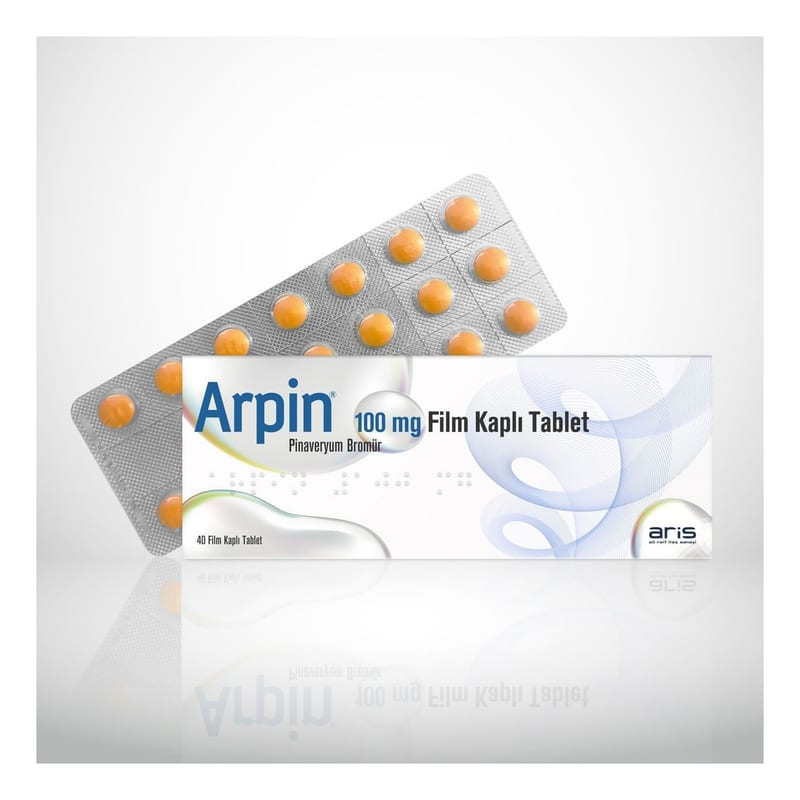

Arpin 100 mg Film Kaplı Tablet, 40 Adet

Ne için kullanılır
KT · Bölüm 1• ARPİN®, karton kutuda, 40 ve 80 film kaplı tabletten oluşan blister ambalajlarda sunulur. Film kaplı tabletler, sarımsı-turuncu renkli, yuvarlak bikonvekstir ve tabletlerin bir yüzünde “100” baskısı bulunur. • ARPİN®pinaveryum bromür içerir. Bu, antispazmodik olarak adlandırılan bir ilaç grubuna dahildir ve sizin bağırsak ve safra kanalınıza etki eder. • Bağırsak, uzun kaslardan oluşan, yiyeceklerin sindirilmek üzere geçtiği bir kanaldır. Safra kanalı, safranın karaciğerinizden mide sonrasındaki bölüme açıldığı kanaldır. Eğer bağırsak ya da safra kanalı spazm geçirirse ve kuvvetli bir şekilde kasılırsa ağrınız olur. Bu ilaç spazmın ve ağrının rahatlatılmasını sağlar.
• ARPİN®, bağırsak veya safra kanalındaki tıbbi durumlardan kaynaklanan mide veya bağırsak şikayetlerinin rahatlatılmasında kullanılır. Bu şikayetler kişiden kişiye değişmekle birlikte aşağıdaki gibi olabilir; - Mide ağrısı ve kramp - İshal, kabızlık veya her ikisi - Şişkinlik ve yellenme
ARPİN®, ayrıca baryum lavmanından önce bağırsağın dışkıdan temizlenmesi için kullanılır - bu bir X-ışını (röntgen) çeşididir.